01
SemiAnalysis 分析华为与 DeepSeek 的协同
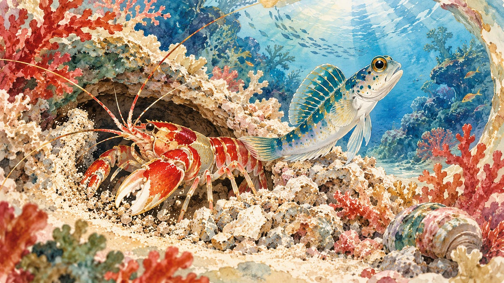
SemiAnalysis 分析华为 Ascend 950PR 微基准、DeepSeek V4.1 Flash 与 Ascend 支持。采集摘要未包含具体结果，不能仅凭标题推断吞吐、成本或竞争力。
每天一次，过滤 AI 噪音

SemiAnalysis 分析华为 Ascend 950PR 微基准、DeepSeek V4.1 Flash 与 Ascend 支持。采集摘要未包含具体结果，不能仅凭标题推断吞吐、成本或竞争力。
OpenAI 宣布 ChatGPT 广告扩展至 26 个新国家，并称已有超过十万广告主使用该平台。该数字属于公司披露，未提供留存、支出、转化率或逐国上线时间。
OpenAI 宣布其前沿模型与 Codex 工作流将通过 Google Cloud Marketplace 进入 Gemini Model Garden。重点是跨厂商分发与企业采购；摘要未列出完整模型、地区或价格。
OpenAI 介绍 Patch the Planet，连接安全研究人员、开源维护者与事件响应团队，应对智能体发现的关键漏洞。价值在发现之后的修复与协调，摘要未给出覆盖范围或处置效果数据。
OpenAI、PerturbAI 与 Scripps Research 使用分布式智能体分析数百万脑细胞数据，寻找研究线索。这里是候选发现，而非已确立疗法或临床成果，后续仍需科学验证。

Anthropic 任命实验物理学家、哈佛前科学学院院长 Christopher Stubbs 为长期利益信托成员。该独立信托可任命董事会多数成员并就 AI 风险提供建议，实际意义取决于其权力如何落实。
Mistral Large 4 官方文档进入当日 Hacker News 热门讨论，采集时获 163 分。现有记录未包含架构、价格或基准数据，评估应以官方文档为准。
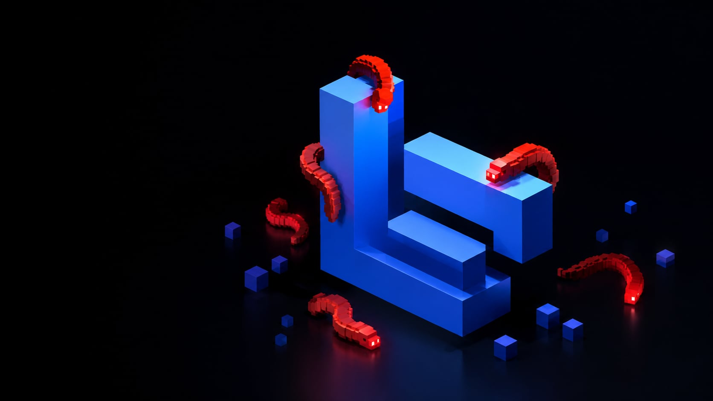
SafeDep 报告称 PyPI 上 LiteLLM 1.107.0 被植入凭据窃取程序和后门。该事件与 AI 应用依赖及凭据安全直接相关；采集记录未明确受影响时段、修复版本或完整范围。
CNBC 报道 Meta 在新墨西哥州 Cambridge Analytica 案中被判支付 250 亿美元罚款。该案属于隐私与平台责任议题；记录未说明上诉状态、支付时间或判决细节。
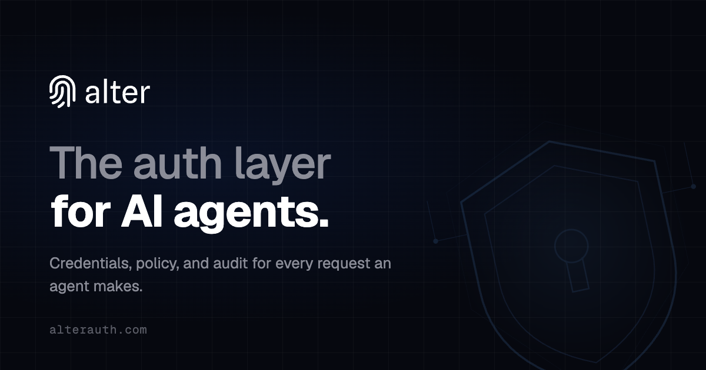
Alter 推出用于多用户智能体的访问控制代理，管理下游凭据、关联用户身份、执行运行时策略并记录审计日志，以解决聊天登录身份与外部系统共享凭据之间的权限断层。
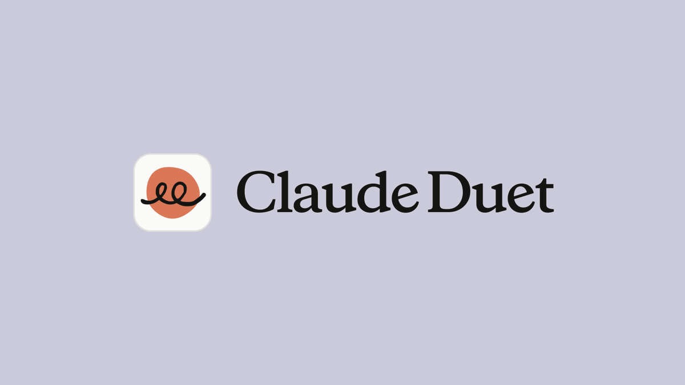
Anthropic 开放 Claude Duet 研究预览：主动提示待办事项、执行任务，并在用户离开后继续工作；代表用户采取行动前会征求确认。公告尚未证明全面可用性或实际可靠性。
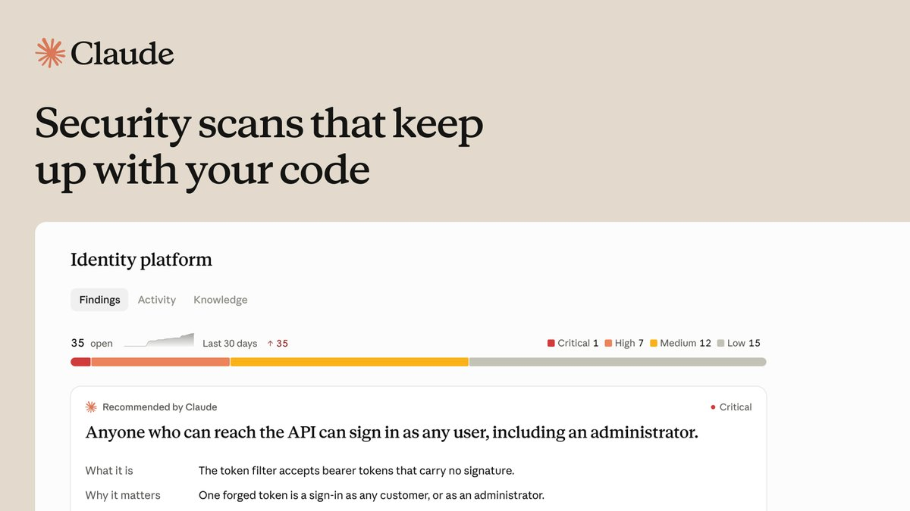
Claude Security 在首次深度扫描后，随代码更新重新扫描仓库，目前面向 Claude Enterprise 提供公开测试。此举把安全检查变成持续工作流，但公告未提供误报率或对比检测数据。
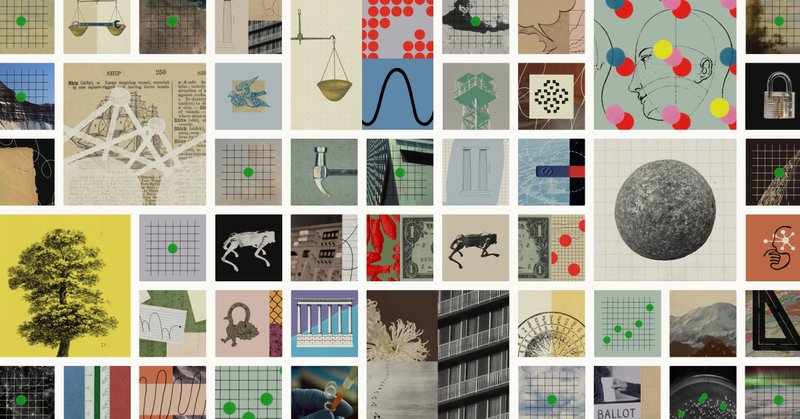
Anthropic 发布年度公共利益报告，介绍五大支柱及相关行动。报告为外界评估其公共利益使命提供依据，但企业自述仍需与实际落实和结果分别审视。
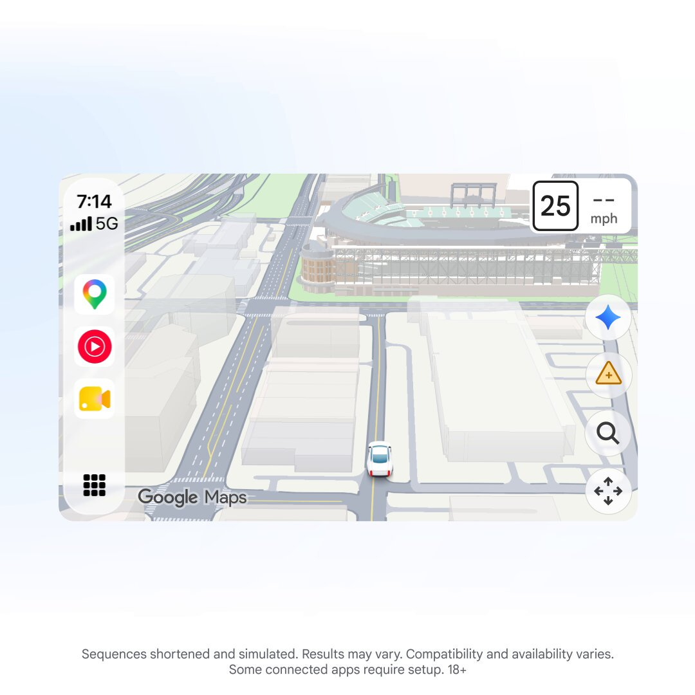
Google 宣布 Gemini 已进入 CarPlay 的 Google Maps 导航，可通过对话寻找停车地点、报告路况或修改路线。公告未明确所有地区、语言及车辆的支持情况。
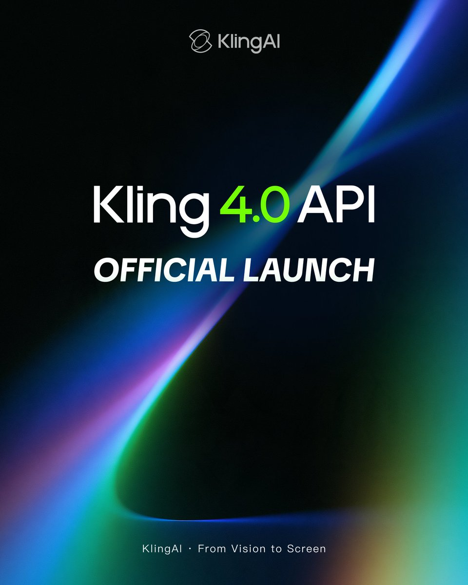
Kling 宣布正式推出 Kling 4.0 API，允许开发者接入产品和工作流。相比展示视频，API 更具集成意义，但公告未说明定价、限流或服务保证。
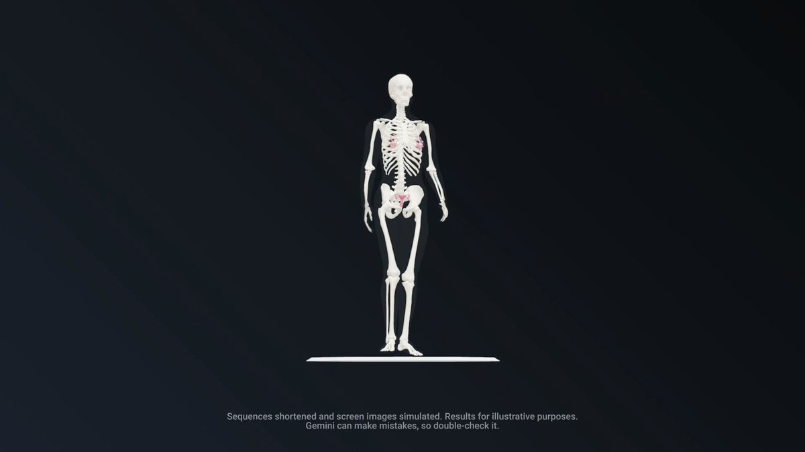
Google DeepMind 展示 Gemini 4 Argon 整合三个开源数据集生成的人体解剖交互工具，支持分层、肌肉隔离及心脏内部观察。这是厂商演示，并非临床有效性验证。
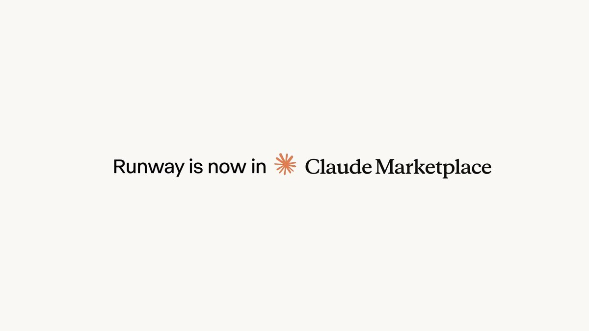
Runway 宣布加入 Claude Marketplace，企业可将部分 Anthropic 支出承诺用于 Runway Creative 的视频、图像和音频生成。核心变化在采购与预算整合，具体资格和合同条件仍需核实。
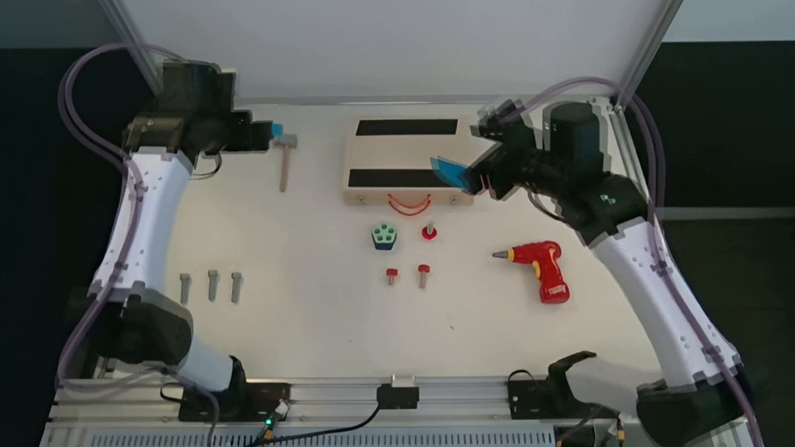
Jim Fan 宣布 Flora 开放模型权重，将物理世界视频转成机器人训练信号，并声称以低 125 倍的成本达到 Astra 级表现；这些指标属于发布方陈述，尚未独立验证。
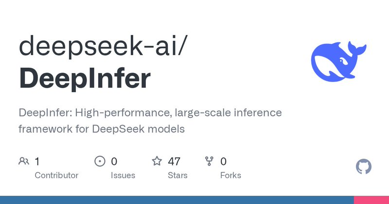
Thomas Wolf 介绍 DeepSeek 将 V4.1 Flash 推理引擎以 Apache 2.0 开源，并联系此前的算子、通信和存储项目。此处为二手发布信息，并非性能验证。
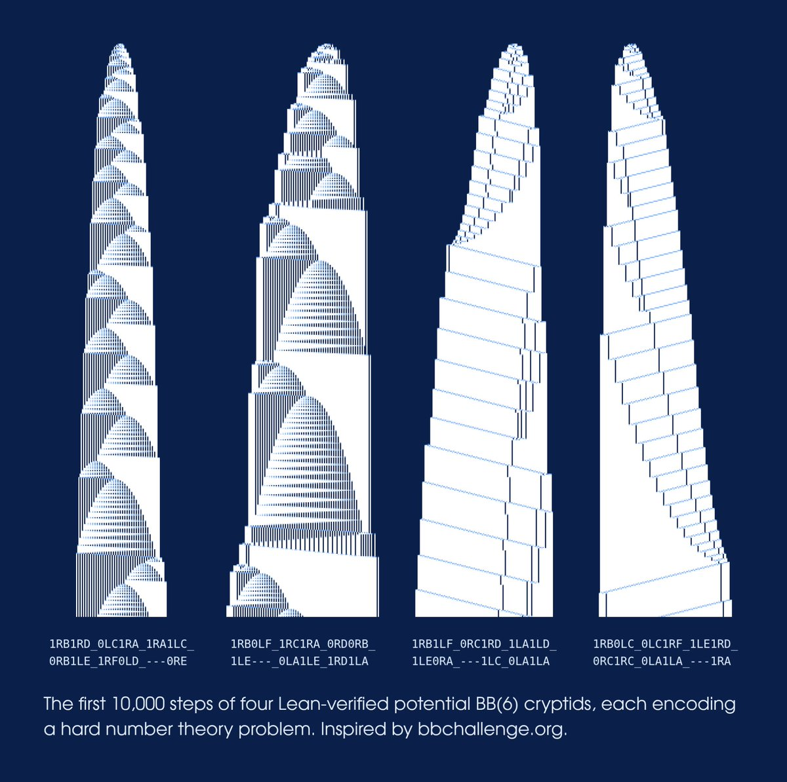
Zoubin Ghahramani 介绍 DeepMind 关于长时间运行后才停机的简单程序的理论计算机研究，强调 AI 驱动的开放式发现。简短公告不足以验证具体纪录或证明。
Headroom 提供库、代理与 MCP 服务器，压缩工具输出、日志、文件和检索片段。项目声称编码智能体减少 20% token、JSON 减少 60% 至 95%，需在实际任务中验证信息保真度。

vLLM 进入当日采集的 GitHub 项目列表，采集时有 94,805 星，定位为高吞吐、内存高效的模型推理服务引擎。本条是基础设施观察，并不代表发布了新版本。
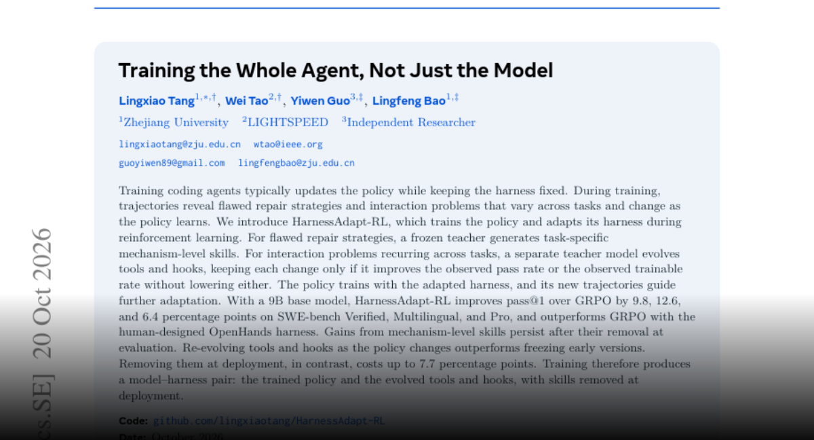
HarnessAdapt-RL 在训练编码策略时同步改进技能、工具与钩子。作者报告 9B 模型在三个 SWE-bench 变体上较 GRPO 提升 9.8、12.6 与 6.4 个百分点；移除演化工具会损失性能。
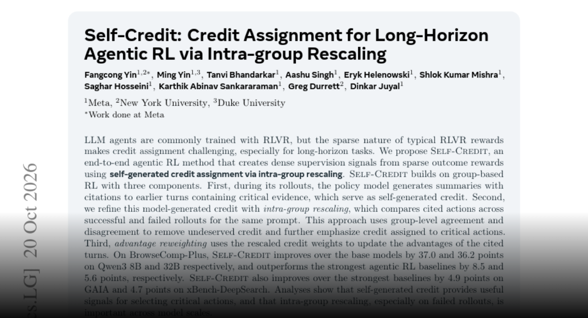
Self-Credit 利用智能体对关键历史动作的引用，并对比成功与失败轨迹来重新分配训练优势。作者在 BrowseComp-Plus、GAIA 和 xBench-DeepSearch 上报告提升，旨在解决长任务中最终奖励难以归因的问题。
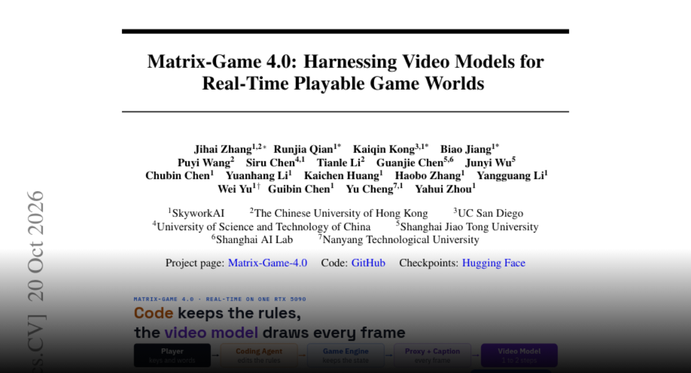
Matrix-Game 4.0 将游戏引擎、编码智能体与自回归视频渲染器结合：引擎维护状态和规则，视频模型生成画面。作者报告单张 RTX 5090 实现 480p、60 FPS 和 112 毫秒输入到显示延迟。
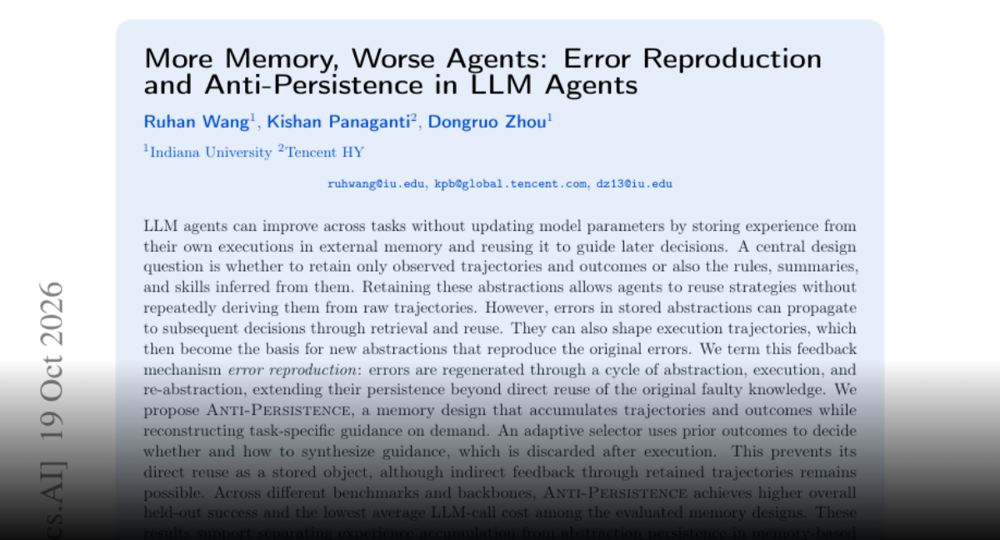
Anti-Persistence 指出永久保存智能体推导的规则可能循环复制错误。其方案保留轨迹与结果，按需重建指导并在执行后丢弃；作者报告测试成功率与调用成本优于所比较的记忆方案。